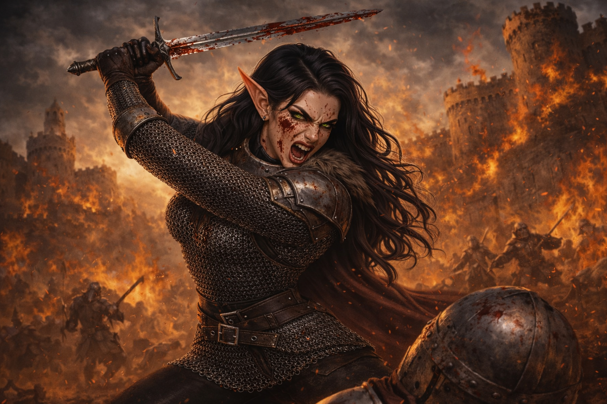
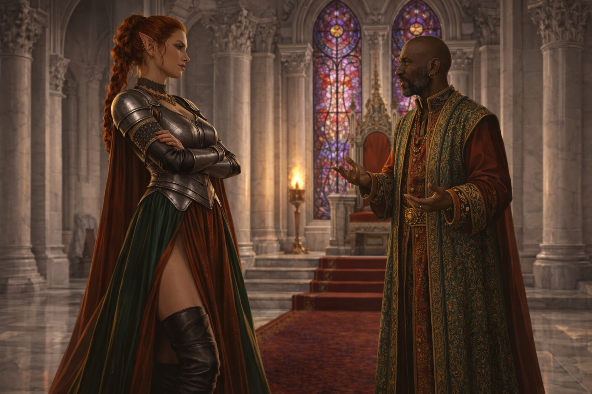
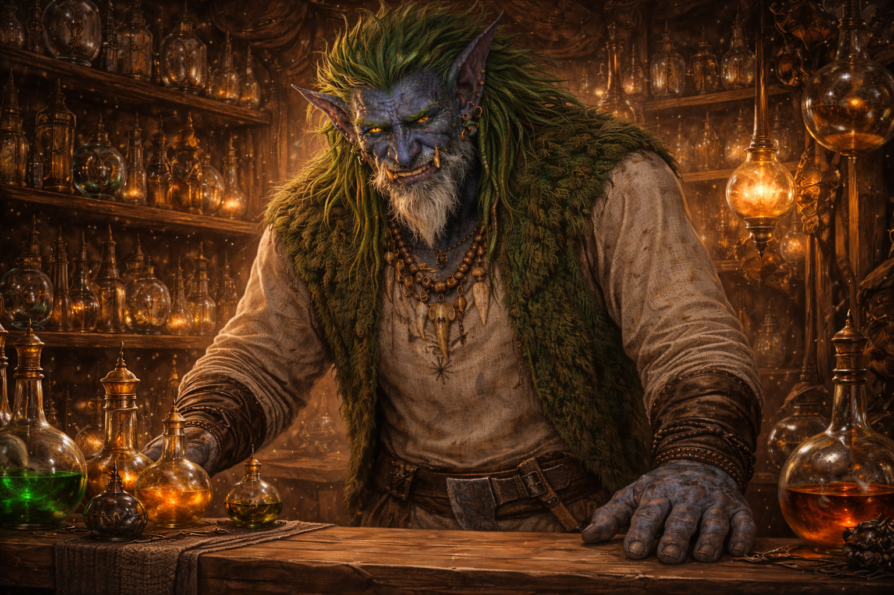

МОРРЕНОР
Трещины мира



Зен Джа инстинктивно шагнул ближе к эльфийке, загораживая её плечом. — Рин, не смотреть вниз, — прошептал он. — Не смотреть. В первой капле она увидела себя в Аэрун Даре — окровавленную, с безумными горящими глазами, с мечом, который поднимался и опускался снова и снова. Её рот был широко открыт в беззвучном крике — не боли и не ярости, а чистого, животного наслаждения. Она резко дёрнулась, пытаясь отвернуться, но взгляд уже прилип. Во второй капле была другая она. Та, из старого сарая у дороги на Лирвенд. Девушка с палкой, в которую был вбит длинный ржавый гвоздь. Она методично разбивала черепа, вдавливала грудные клетки, слушала, как хрустят рёбра. Именно там, в том сарае, среди криков и запаха крови, впервые родилось её прозвище. «Тёмное сердце».
Трещины мира раскрываются. Готов ли ты войти?